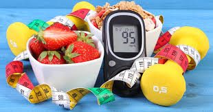
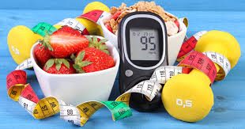

symptoms
- Chest pain or discomfort.
- Feeling weak, light-headed, or faint.
- Pain or discomfort in the jaw, neck, or back.
- Pain or discomfort in one or both arms or shoulders.
- Shortness of breath.
How to decrease risk factors associated with a heart attack
- Stop smoking and minimize your exposure to secondhand smoke.
- Stay physically active daily.
- Control your weight if you’re overweight or obese.
- If you have diabetes, take care by sticking to your treatment plan and managing your blood sugar.
- Limit your alcohol consumption.
what to do immidiately of heart attack occur?
- Call 911 or your local emergency number.
- Chew and swallow an aspirin while waiting for emergency help.
- Take nitroglycerin, if prescribed.
- Begin CPR if the person is unconscious.
- confusion, dizziness, and nausea
- feeling hungry
- feeling shaky, nervous, irritable or anxious
- sweating, chills, and pale, clammy skin
- rapid heartbeat
- weakness and tiredness
- tingling in the mouth area
- headaches
- seizures
- coma or loss of consciousness
- weight loss if hypoglycemia persists
symptoms
Action to take place to reduce damage
- a glucose tablet
- a sweet juice
- a candy
- a sugar lump
If the symptoms appear suddenly, the person should take a high-carb snack to resolve them, such as:
About 1 out of 10 people may have a seizure during his or her lifetime. That means seizures are common, and one day you might need to help someone during or after a seizure.
- Stay with the person until the seizure ends and he or she is fully awake. After it ends, help the person sit in a safe place. Once they are alert and able to communicate, tell them what happened in very simple terms.
- Comfort the person and speak calmly.
- Check to see if the person is wearing a medical bracelet or other emergency information.
- Keep yourself and other people calm.
- Offer to call a taxi or another person to make sure the person gets home safely.
how to recover
symptoms
- Shortness of breath.
- Wheezing.
- Increased mucus (sputum) production.
- Chronic cough.
- Racing heartbeat.
- Fatigue.
treatment
- If you're a current smoker, the most important thing you can do to aid your treatment is to quit smoking.
- Exercise has also been shown to be helpful in many different lung conditions, as it helps improve lung function
- Whenever possible, avoid secondhand smoke and chemical fumes.
- Get the nutrition your body needs. Work with your doctor or dietician to create a healthy eating plan.